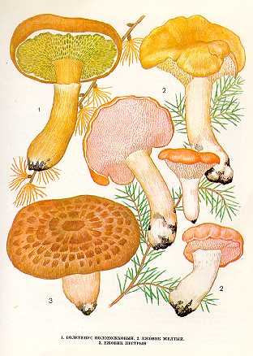

1. БОЛЕТИНУС ПОЛОНОЖКОВЫЙ. МОХОВИК ПОЛОНОЖКОВЫЙ.
Растет в хвойных, преимущественно лиственничных
и смешанных лесах. Плодоносит с августа по октябрь.
Шляпка до
Трубчатый слой сначала бледно-желтый, затем от
буроватого до оливкового. Трубочки
нисходящие по ножке, неравной длины. Споры желто-бурые, веретеновидно-эллипсоидные.
Ножка до
Гриб съедобен, четвертой категории. Используется свежим, пригоден для сушки.
2. ЕЖОВИК ЖЕЛТЫЙ
Растет в лиственных, хвойных и смешанных лесах в июле - сентябре.
Шляпка розовато-желтая или желтоватая,
мясистая, плоская, с вогнутой серединой, обычно неровная, как бы покоробленная,
с загнутыми вниз краями. Достигает
Нижняя поверхность шляпки усыпана короткими, желтовато-розовыми, очень ломкими, легко осыпающимися, игольчатыми шипиками.
Ножка короткая, толстая, плотная, светлее шляпки.
Молодой гриб съедобен, четвертой категории. Используется вареным и жареным, пригоден для сушки, засола и маринования.
Старые грибы становятся горькими и в пищу непригодны.
3. ЕЖОВИК ПЕСТРЫЙ
Встречается в сухих хвойных (сосновых) лесах на песчаной почве во второй половине сентября.
Шляпка до
Нижняя поверхность шляпки усеяна
серовато-белыми иголками до
Ножка до
Молодой гриб съедобен, четвертой категории. Употребляется вареным, жареным и тушеным.